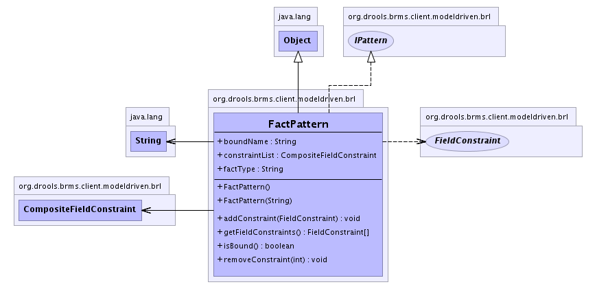

org.drools.brms.client.modeldriven.brl
Class FactPattern
java.lang.Object
 org.drools.brms.client.modeldriven.brl.FactPattern
org.drools.brms.client.modeldriven.brl.FactPattern
- All Implemented Interfaces:
- IPattern, PortableObject
public class FactPattern
- extends java.lang.Object
- implements IPattern
A fact pattern is a declaration of a fact type, and its constraint,
and perhaps a variable that is it bound to
It is the equivalent of a "pattern" in drools terms.
-
- 
| Methods inherited from class java.lang.Object |
clone, equals, finalize, getClass, hashCode, notify, notifyAll, toString, wait, wait, wait |
constraintList
public CompositeFieldConstraint constraintList
factType
public java.lang.String factType
boundName
public java.lang.String boundName
FactPattern
public FactPattern()
FactPattern
public FactPattern(java.lang.String factType)
addConstraint
public void addConstraint(FieldConstraint constraint)
- This will add a top level constraint.
removeConstraint
public void removeConstraint(int idx)
isBound
public boolean isBound()
- Returns true if there is a variable bound to this fact.
getFieldConstraints
public FieldConstraint[] getFieldConstraints()
- This will return the list of field constraints that are in the root
CompositeFieldConstraint object.
If there is no root, then an empty array will be returned.
- Returns:
- an empty array, or the list of constraints (which may be composites).